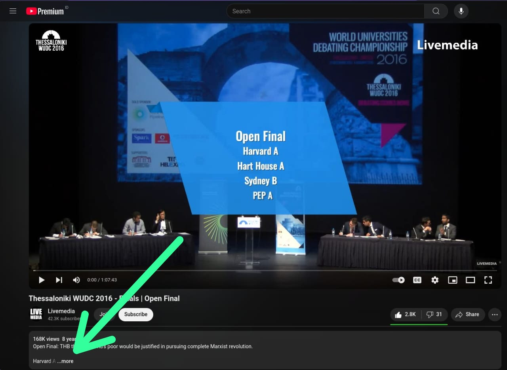
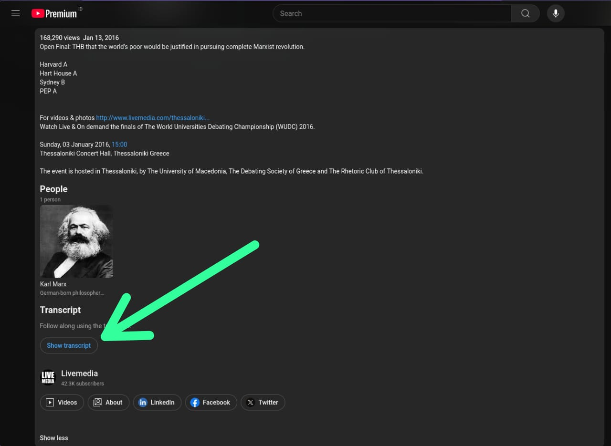
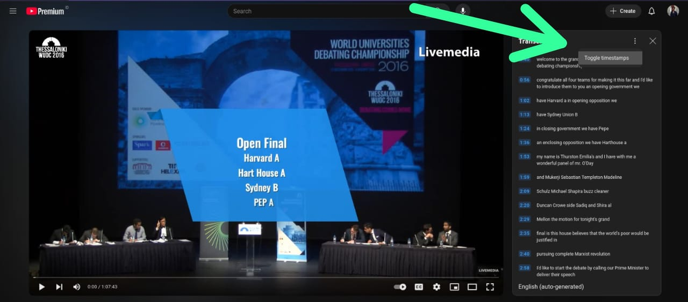
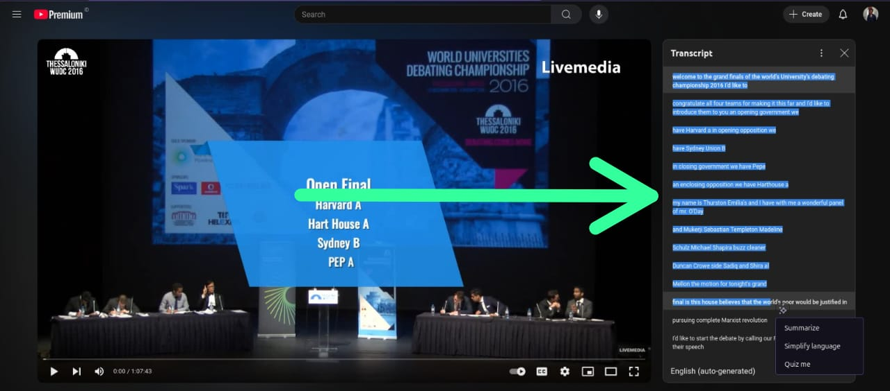

Open any video you want to transcript
Go to the video description and click the "more"
Click the "Show Transcript" and it'll show the transcript box on the left side of the video
Toggle the timestamp
Select the desired transcript and copy it
. Paste your YouTube transcript in the input box.
. Click "Edit" to process the transcript.
. Use "Copy" to copy the formatted transcript.
. Click "Save" to download the transcript as a text file.